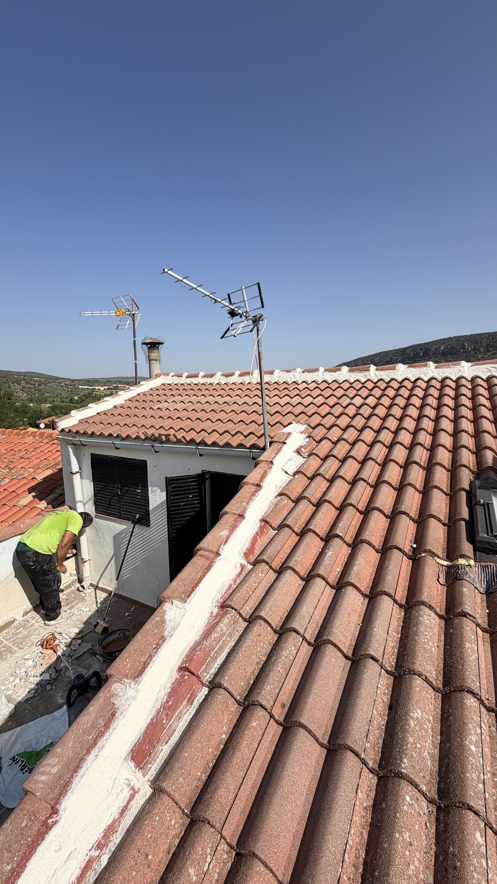
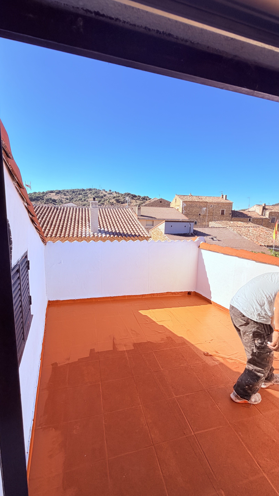
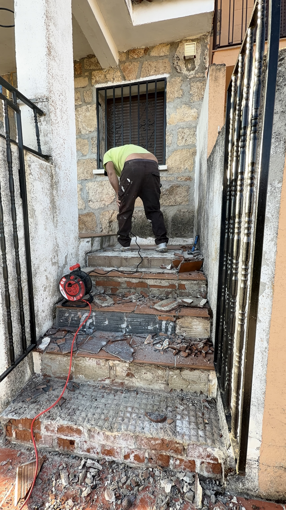
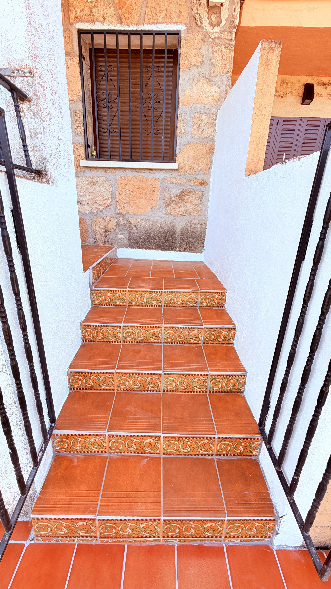
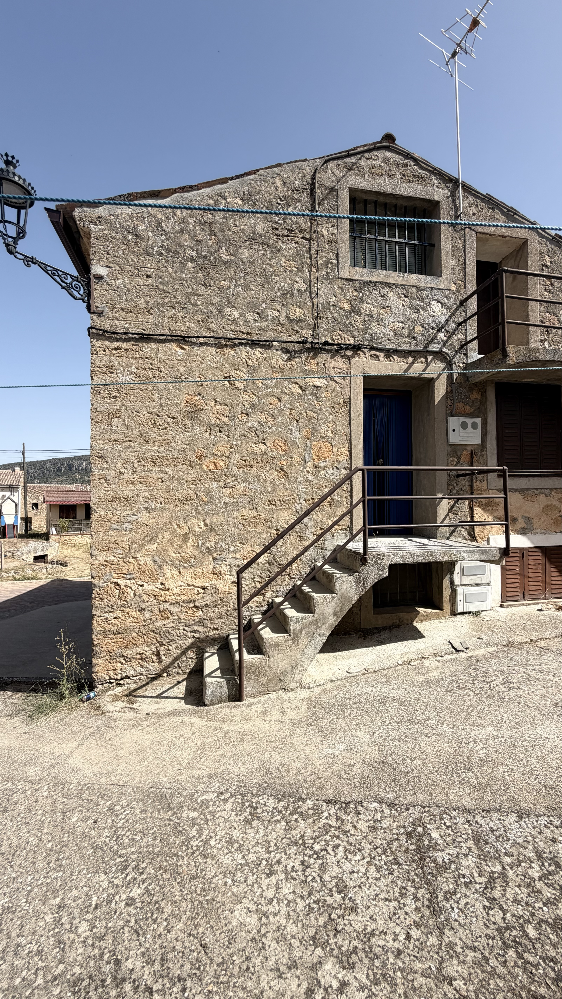
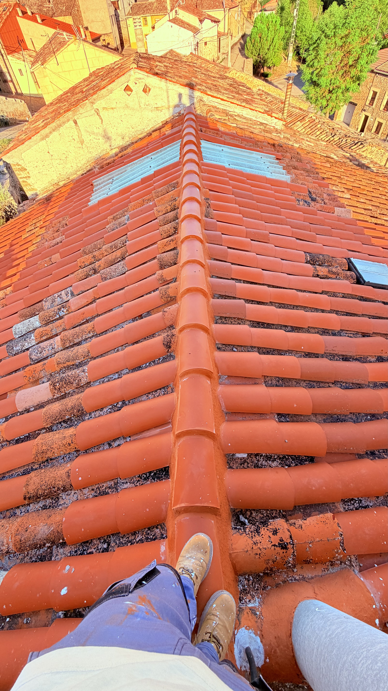
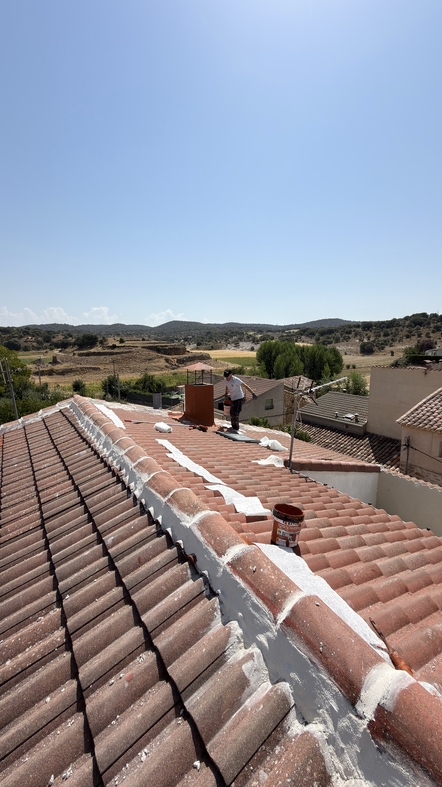
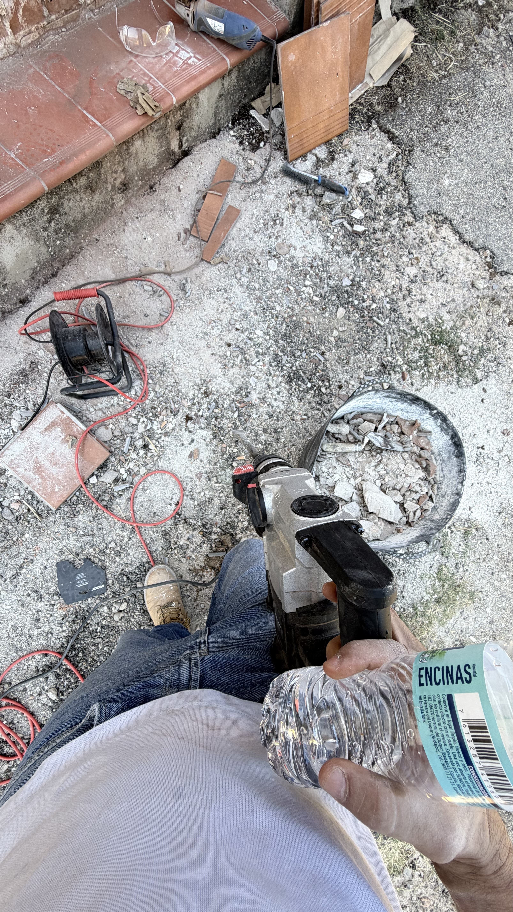

⌂
Tejados
Reparación, instalación y mantenimiento de tejados y cubiertas.
TEJADOS · REFORMAS · IMPERMEABILIZACIÓN
Profesionales especializados en tejados, cubiertas, impermeabilización, canalones, albañilería y reformas. Trabajamos con seriedad, experiencia y acabados de calidad.
NUESTROS SERVICIOS
Realizamos trabajos de construcción, reparación, mantenimiento y reforma con un equipo profesional.
Reparación, instalación y mantenimiento de tejados y cubiertas.
Soluciones contra filtraciones y humedades en cubiertas y terrazas.
Instalación, reparación y limpieza de canalones y bajantes.
Reformas generales, trabajos de albañilería y rehabilitación.
Pintura interior y exterior para viviendas, locales y edificios.
Trabajos en fachadas y zonas de difícil acceso.
Pavimentos resistentes y decorativos para patios, entradas y exteriores.
Limpieza, revisión y mantenimiento de tejados y cubiertas.
Muros caravista, alicatados y diferentes trabajos de acabado.
TRABAJOS REALIZADOS
Una muestra de trabajos realizados por Tejados y Reformas Rivero.




.jpeg)





TEJADOS Y REFORMAS RIVERO
Nos dedicamos a la reparación y construcción de tejados, impermeabilización, canalones y reformas generales.
Trabajamos principalmente en Alcalá de Henares, Madrid y alrededores, ofreciendo un servicio profesional y cercano.
CÓMO TRABAJAMOS
Contacta con nosotros y explícanos qué trabajo necesitas realizar.
Valoramos el trabajo y las necesidades del proyecto.
Te presentamos una propuesta clara y adaptada al trabajo.
Nuestro equipo se encarga de ejecutar el proyecto.
ZONA DE TRABAJO
Realizamos trabajos en Alcalá de Henares, Madrid y diferentes municipios de la Comunidad de Madrid.
CONTACTO
Ponte en contacto con nosotros para solicitar información o un presupuesto.
Alcalá de Henares y Comunidad de Madrid